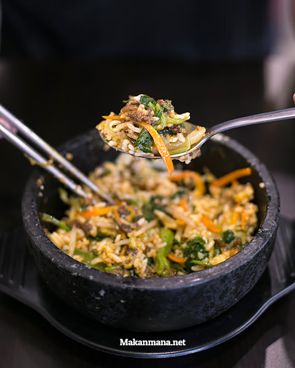

Buat kamu pecinta Korean food, ataupun yang belum pernah mencicipi nikmatnya kimchi atau tteokbokki karena rata-rata korean food ber-predikat ‘mahal’, maka berbahagialah karena Sam Won Express telah hadir di Medan.
Sam Won Express, franchise yang termasuk dalam Samwon grup saat ini memiliki 10 outlet di pulau Jawa. Hingga saat ini, Samwon express merupakan satu-satunya outlet yang berada di pulau Sumatera.
Sam Won Express yang berlokasi di bagian ruko Center Point ini membawa hidangan otentik khas negeri ginseng seperti Bibimbap, Samgyetang, Japchae, Bulgogi dan sebagainya.
Walaupun menempati bagian ruko, namun lokasi ini cukup nyaman dan bersih. Poster besar Dolsot Bibimbap (nasi campur khas korea / 36rb) menghiasi dinding restoran, yang akhirnya kami order karena tertulis sebagai salah satu menu andalan disini.
Isi dari Bibimbap berupa nasi sebagai dasarnya, sayuran seperti bayam, tauge, timun dan wortel, irisan daging sapi impor dan sebutir telur didalam mangkuk dari batu yang panas.

Cara makannya, campurkan Bibimbap Sauce secukupnya kemudian aduk semuanya selagi panas. The taste: Delicious and addicting!

Selain itu kami juga order Chicken Teriyaki Set Menu (36rb) yang merupakan bento set. Hidangan ini sudah termasuk nasi putih, omelet dan kimchi. Oh ya, buat kamu yang mau lebih hemat, cukup tambah sekitar 7rb-an untuk dapetin cold ocha dan soup.

Next on the table is Hot Ramyun (26rb). Semangkok ramen pedas yang kami sharing karena kami penggemar berat mie. Rasa pedasnya tidak overpowering, tapi buat kamu yang gak tahan pedes tersedia juga Ramyun versi biasa.
Japchae (27rb) sejenis bihun namun lebih tebal dan sangat kenyal.

Tteokbokki sendiri sangat populer di Korea. Jadi buat kamu yang belum pernah mencicipinya, wajib dong cobain jajanan khas yang mungkin sering kamu lihat di film drama-drama Korea.
Samwon Express Medan
Ruko Center Point (pas di seberang pintu masuk belakang Mal)
061-80510779